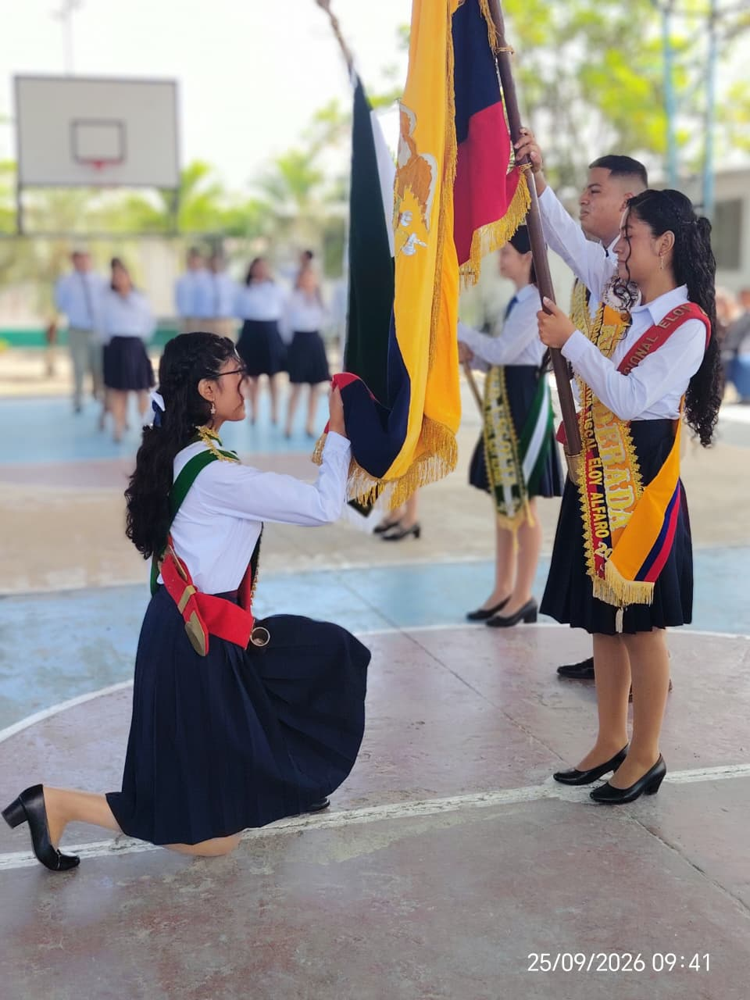
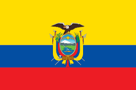

← Noticias y comunicadosORGULLO ALFARINO · VIERNES 25 DE SEPTIEMBRE DE 2026
Una promesa de honor a nuestra bandera
Juramento a la Bandera y proclamación del Cuadro de Honor 2026–2027.
En vísperas del Día de la Bandera · 26 de septiembreORGULLO ECUATORIANO

IDENTIDAD · RESPONSABILIDAD · FUTURO
Un día para llevar nuestros símbolos en el corazón.
El viernes 25 de septiembre, la comunidad educativa de la Unidad Educativa Fiscal Eloy Alfaro se reunió para rendir homenaje a la Bandera Nacional. El Día de la Bandera del Ecuador se conmemora cada 26 de septiembre; en 2026 cayó sábado, por lo que la comunidad educativa realizó el acto el viernes 25.
En el mismo encuentro se presentó al Cuadro de Honor del período lectivo 2026–2027. Sus estudiantes asumieron con orgullo el compromiso de representar los valores, la historia y la identidad de su institución y del país.
Con la participación de autoridades, docentes, familias y estudiantes, vivimos una jornada cívica que celebra el esfuerzo académico y fortalece el respeto por nuestros símbolos patrios.
RECONOCIMIENTO AL MÉRITOCuadro de Honor
Cuadro de Honor
2026–2027
Estudiantes designados para representar a nuestra comunidad educativa.
Zhair Estefanía Moreira Delgado
PortaestandarteSarah Lisethe Cedeño Zambrano
PortaestandarteAntonella Anahí Marzano Chuez
Primera escoltaJavier Alexander Morales Andrade
Segundo escoltaBrittany Liliana Calderón Zambrano
EscoltaBriana Jemali Hidalgo Zambrano
EscoltaJeremy Leandro Coello Véliz
EscoltaFiorella Salomé Domínguez Delgado
EscoltaPOSTALES DE LA CEREMONIA
Un compromiso que nos une.
A cada integrante del Cuadro de Honor, nuestras felicitaciones. Que este reconocimiento los inspire a seguir creciendo con dedicación, humildad y amor por su institución. ¡Viva la Bandera del Ecuador!
La fecha cívica del 26 de septiembre consta en el Reglamento General a la Ley Orgánica de Educación Intercultural, art. 183.